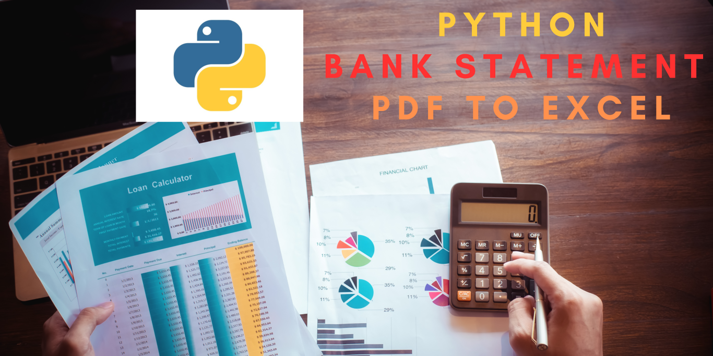

Extracting Nepali Bank Statement Data from PDF to Excel
Introduction
This guide explains how to extract table data from NIC Asia Bank PDF bank statements and save it as an Excel file. Using Google Colab for this process avoids the need to install anything on your local machine, allowing you to upload the bank statement PDF or connect a Google Drive folder to save the output file.
1. Opening Google Colab and Mounting Google Drive
To get started, open Google Colab and mount your Google Drive to access files in it. This will allow you to save the output Excel file directly to Google Drive.
from google.colab import drive
drive.mount('/content/drive')2. Installing Required Modules
In Google Colab, install the necessary packages: camelot-py[cv] for reading tables in PDFs, PyPDF2 for handling PDFs, and ghostscript for rendering support.
!pip install "camelot-py[cv]" -q
!apt-get install ghostscript -q
!pip install "PyPDF2~=2.0" -q3. Uploading the Bank Statement PDF
To upload the PDF file directly, go to the file explorer in Google Colab (left sidebar) and select Upload. Alternatively, place your PDF files in a Google Drive folder and access them as shown in the code below:
folder_path = '/content/drive/My Drive/Bank Statements/NIC Asia/'
pdf_file = folder_path + 'YourBankStatement.pdf' # Change to your PDF file's name4. Extracting Data from Each Page
The script below reads each page of the PDF, extracts tables using camelot, and filters out unnecessary rows until it finds the table headers. The code processes multiple pages and consolidates the data.
import camelot
import pandas as pd
from PyPDF2 import PdfReader
# Initialize an empty DataFrame to combine data from all pages
df = pd.DataFrame()
with open(pdf_file, 'rb') as f:
reader = PdfReader(f)
num_pages = reader.getNumPages()
for page_number in range(num_pages):
tables = camelot.read_pdf(pdf_file, pages=str(page_number + 1), flavor='stream')
page_df = tables[0].df
while page_df.iloc[0, 0] != 'S.N':
page_df = page_df.iloc[1:]
page_df.columns = page_df.iloc[0]
page_df = page_df.iloc[1:]
df = pd.concat([df, page_df], ignore_index=True)5. Data Cleaning
Now that the data is combined, clean it by removing rows with "Opening Balance" or "Closing Balance" and converting dates to a consistent format. Sort the data by transaction date for easier analysis.
df = df[~df['Description'].str.contains('Opening Balance|Closing Balance')]
df['Transaction Date'] = pd.to_datetime(df['Transaction Date'], format="%Y-%m-%d %H:%M:%S")
df = df.sort_values('Transaction Date', ascending=True)6. Additional Data Processing
Next, perform additional cleaning, such as removing extra columns after the "Balance" column and converting numeric columns. A cross-check formula can be created to verify balance calculations based on previous balances, withdrawals, and deposits.
if df.columns[-1] != 'Balance':
df = df.iloc[:, :-1]
numeric_columns = ['Withdraw', 'Deposit', 'Balance']
for col in numeric_columns:
df[col] = df[col].str.replace(',', '').str.replace('-', '0').astype(float)
df['Cross Check Balance'] = df['Balance'].shift(1) + df['Deposit'] - df['Withdraw']7. Saving the Output to Google Drive or Downloading Locally
Once processing is complete, save the DataFrame as an Excel file directly to Google Drive or download it locally.
output_file = folder_path + "NIC_Bank_Statement_Processed.xlsx"
df.to_excel(output_file, index=False)
from google.colab import files
files.download(output_file)Conclusion
This guide walks you through extracting data from NIC Asia Bank PDF statements and processing it into a clean Excel format using Google Colab. This method ensures that you don’t need any local installations, and files can be easily saved to Google Drive or downloaded for local use.